Tips para operar
Filtros por columnas
Disponés de la posibilidad de filtrar los datos de las pantallas por los contenidos de sus columnas.
En cada columna el ícono de embudo te permite filtrar la información de la columna según el tipo de dato de la misma.
- Si los datos de la columna son de tipo texto (como por ejemplo, código, nombre, descripción) escribiendo un conjunto de caracteres se seleccionan todas las filas que lo incluyan en alguna parte de las mismas.
- Si los datos de la columna son campos donde se seleccionan opciones, como por ejemplo en "Cuentas", donde las columnas "Centro de costos" e "Inmovilizada" tienen las opciones "Sí", "No", "Todos", al presionar el embudo se ofrecen dichas opciones para que selecciones una de ellas. Como resultado solo verás las cuentas correspondientes a la opción que seleccionaste.
Si el embudo se exhibe en color azul en alguna columna, significa que la misma tiene un filtro aplicado.
Podés indicar filtros en varias columnas a la vez. En ese caso éstos se combinan entre sí, es decir, todos deben cumplirse a la vez.
Por ejemplo, si queremos consultar las cuentas de gastos que poseen centro de costos podemos establecer dos filtros, uno por nombre de la cuenta y otro por el tipo de Centro de costos.
Primero establecés el filtro por nombre, de la siguiente manera:
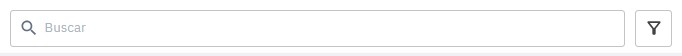
Luego el filtro por centro de costos:
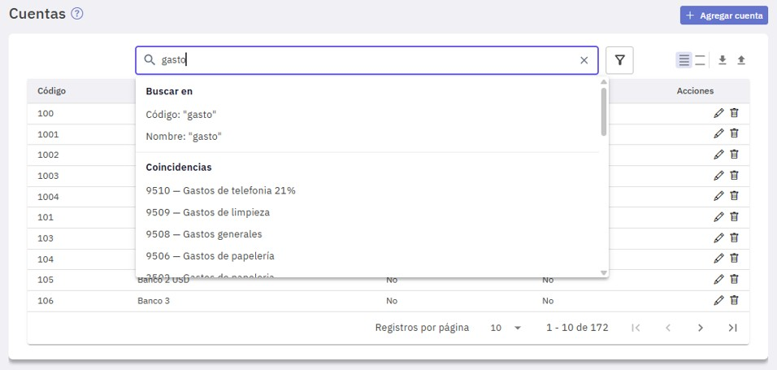
Mostrando como resultado las siguientes cuentas:
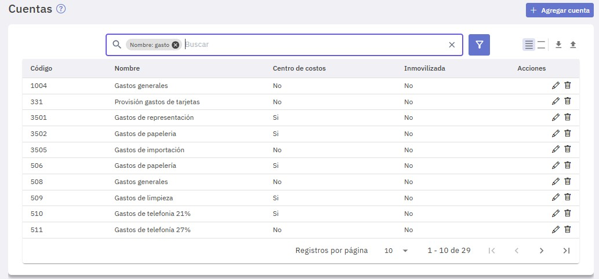
Buscador general en pantallas
Si tenés que buscar un dato en una pantalla disponés de un buscador, identificado con una lupa, que busca el texto que escribas en todas las columnas de la pantalla.
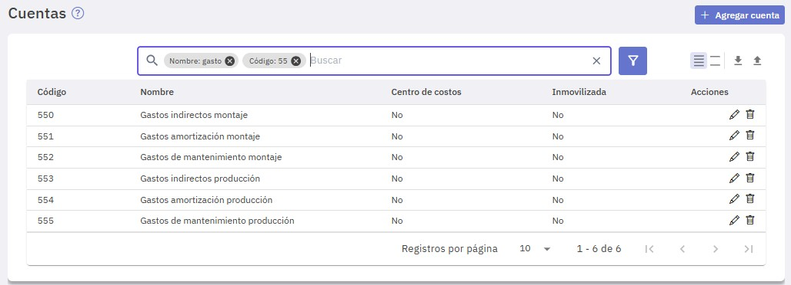
Por ejemplo, si queres buscar un cliente y recordás que parte de su nombre es "aromo" podes realizar la búsqueda escribiendo dicho texto.
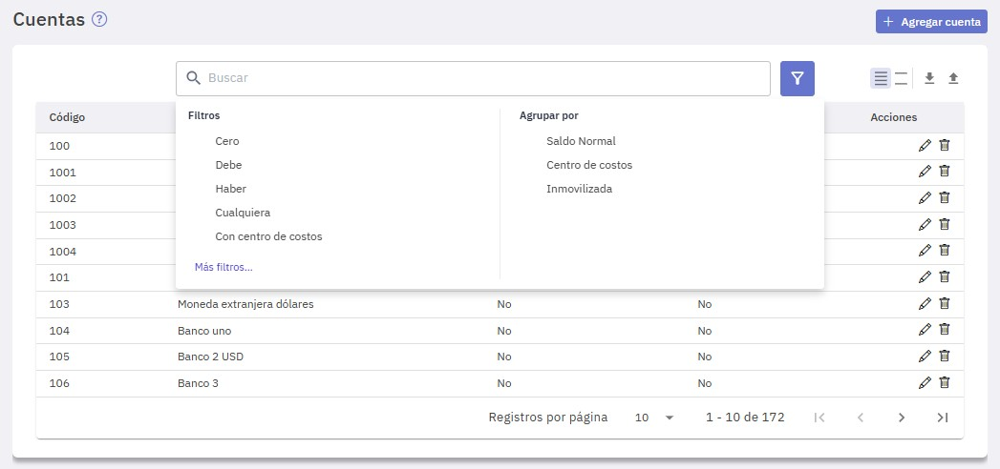
También podés combinar filtros con búsquedas. En este caso aplicá los filtros y sobre dicho resultado busca el texto ingresado. El orden en que lo hagas es indistinto.
Si por ejemplo queres buscar los clientes que son SRL, podés establecer un filtro por "Relación" cliente y luego una búsqueda con el texto "SRL".
Establecés el filtro indicando que la relación es "Cliente":
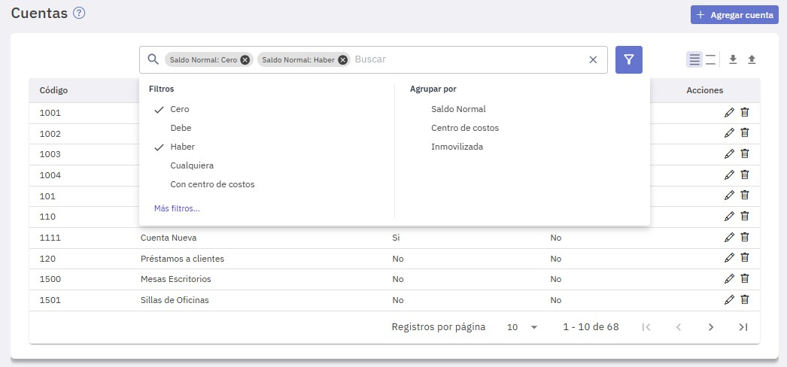
Luego hacés una búsqueda con el texto "SRL":
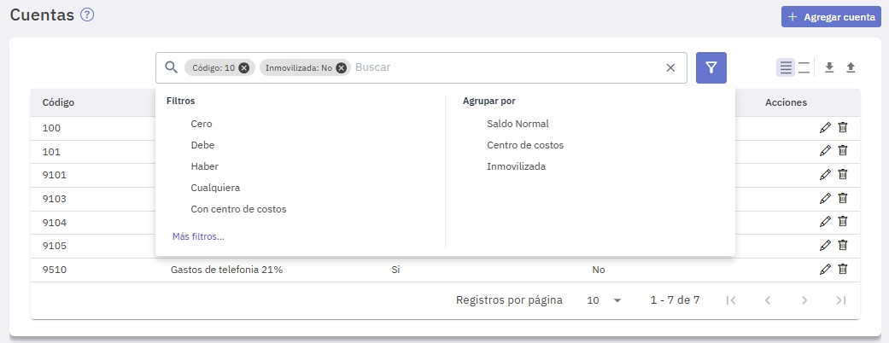
Ordenamientos
En las pantallas donde se listan datos, los mismos pueden ordenarse por diferentes columnas de manera ascendente o descendente.
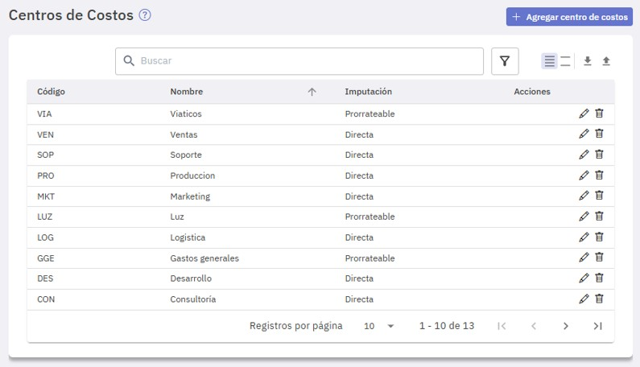
Para ordenar por alguna de las columnas, hace clic sobre ella y verás (a la derecha de la misma) una flechita que indica que los datos están ordenados en forma ascendente
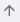
.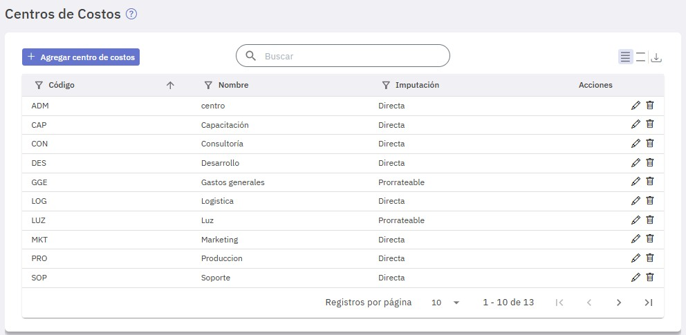
Si volves a hacer clic, los ordenará en forma descendente
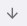
. Con cada clic se cambia el ordenamiento de los datos de la columna donde estás ubicado.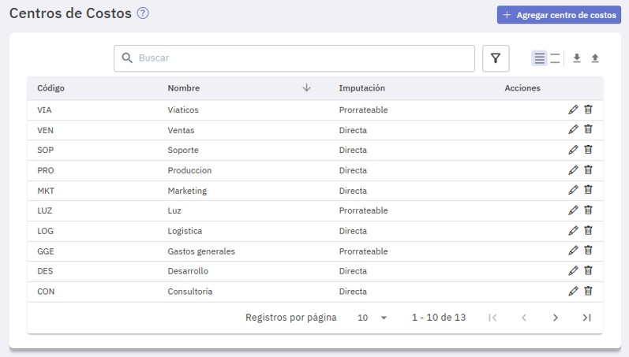
Colapsar y expandir informes
En el encabezado de los informes dispones de los botones "Colapsar" y "Expandir". El primero muestra una línea por cada asiento, el segundo incluye toda la información. El siguiente es un ejemplo de informe del diario colapsado.
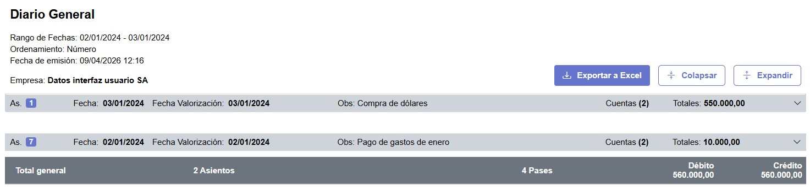
En los informes colapsados, haciendo clic en una línea, desplegás su información en forma detallada. Acá te mostramos la información detallada correspondiente a uno de los asientos del informe.
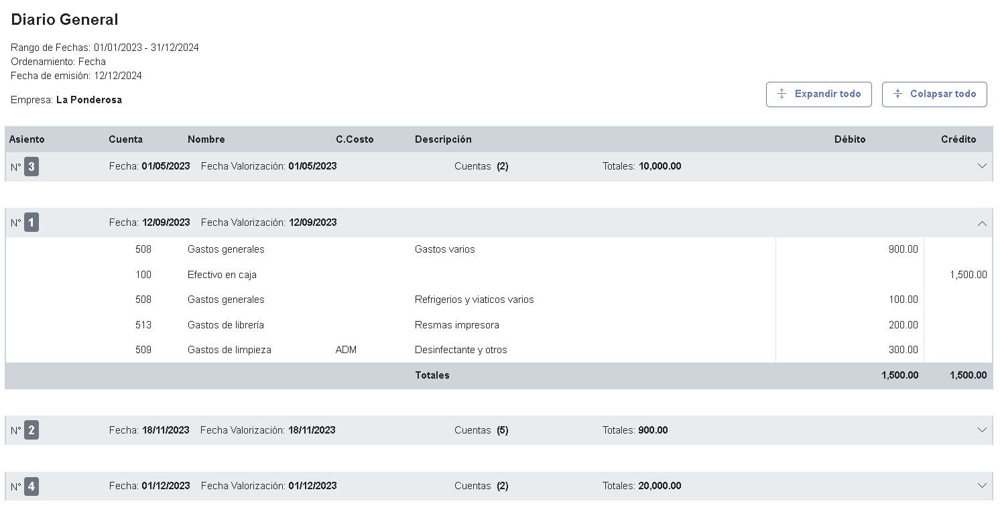
En otros listados, como en la emisión de los balances, podés seleccionar la sección a listar presionando
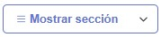
, como así también los niveles visibles a listar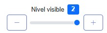
. Debajo te mostramos un ejemplo de la emisión de un balance de sumas y saldos con nivel visible 2.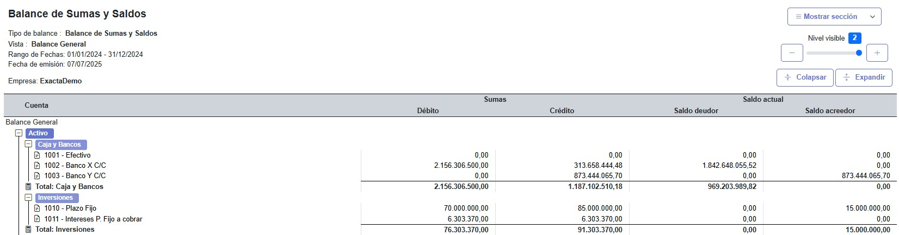
Búsquedas de datos
Cuando tenés que ingresar un dato en una pantalla que diste de alta en otra tabla, como por ejemplo una cuenta al registrar un asiento, dispones de una
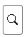
.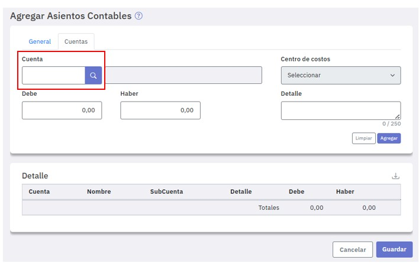
Cuando la presionas se abre una ventana donde podes buscar la cuenta y seleccionarla con el tilde que figura a la izquierda.
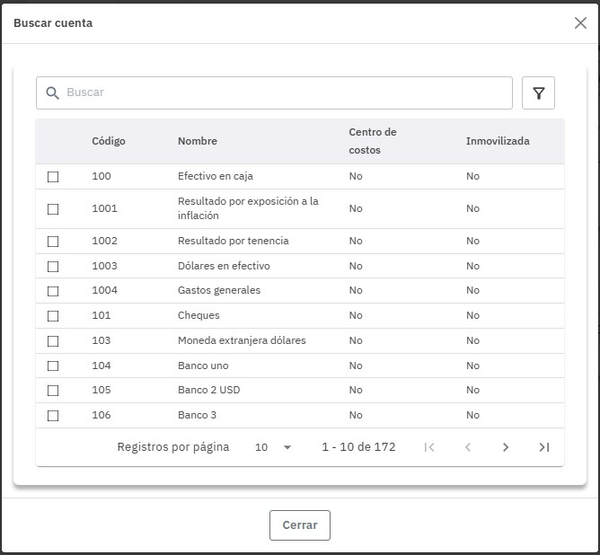
Al tildar el dato que seleccionaste, éste se carga en la pantalla.
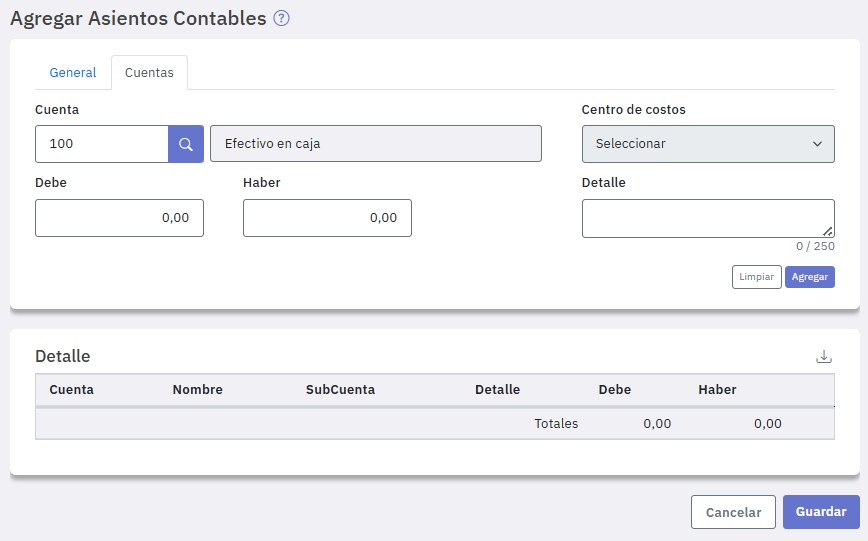
Visualización de datos a incluir en la pantalla
En todas las pantallas que muestran listados, disponés de facilidades para su consulta.
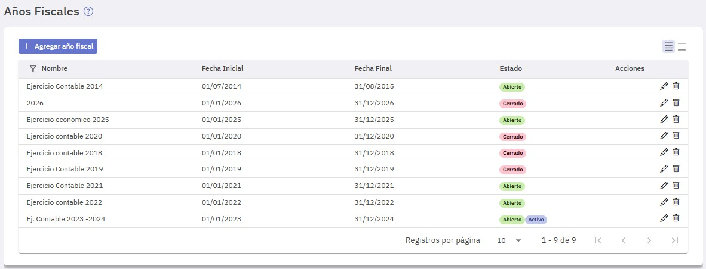
Al pie, a la derecha, podes seleccionar la cantidad de líneas a incluir en la pantalla mediante este botón
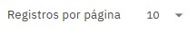
.También al pie, y a la derecha, disponés de botones para moverte entre páginas:
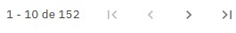
.Espaciado entre líneas de listas
En todas las listas podes elegir el espaciado entre líneas que te quede más cómodo.
Para ello dispones de estos iconos:
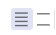
que te permiten establecer dos espaciados diferentes.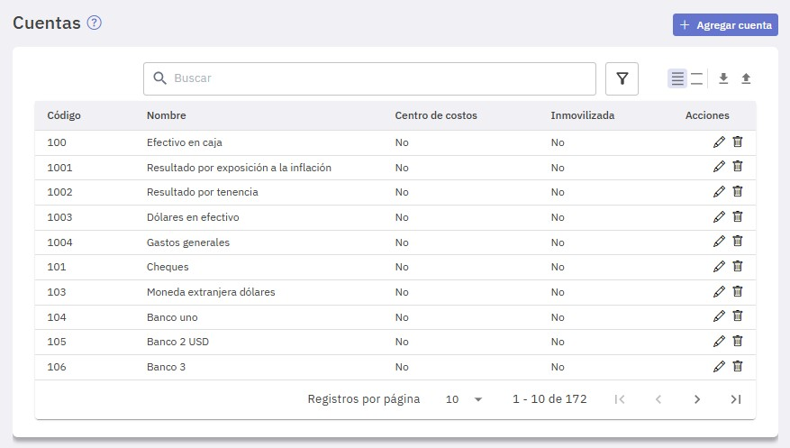
Exportación de datos e informes a Excel
El botón "Exportar a Excel", disponible en los informes y en múltiples pantallas de ingreso de datos, te permite exportar a Excel la información de las mismas. Por ejemplo, en la siguiente pantalla, al presionarlo, exportas a Excel todas las vistas definidas con sus respectivos detalles.
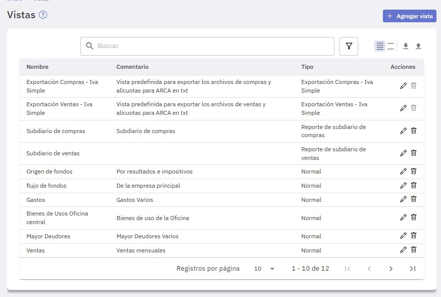